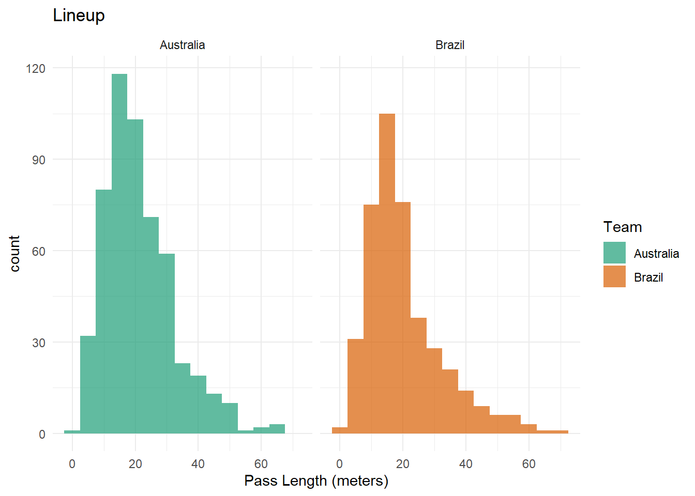

shots <- aus_brazil %>%
filter(type.name == "Shot") %>%
select(location, type.name, possession_team.name, player.name)
shots <- shots %>%
mutate(location_x = sapply(location, `[`, 1),
location_y = sapply(location, `[`, 2)) Q4
Exercise 4
A very successful 2023 Women’s World Cup soccer was held in Australia and New Zealand in the last two months. Data from the last one held in 2019 can be downloaded from R using the package StatsBombR. The data for the Australia vs Brazil match have been downloaded and processed and made available in the file aus_brazil.rda. The match was played on June 14, 2019, in Stade de la Mosson, in France, and Australia won 3-2. This question explores the match data. It will help if you install these packages:
A really nice introduction to working with the data is available here.
- Make a plot of shots on goal made by each team that looks like the following, and include your cleanly written code. (Note: 1.
locationhas the position from which passes were made, in the form of an array. You can access the x and y values usinglocation.xandlocation.y. 2. The positions have been processed so both teams are playing from left to right, so that it is easy to compare their play.)
soccer_pitch_design <- create_Pitch(goaltype = "line")
soccer_pitch_design + geom_point(data = shots, aes(x = location_x,
y = location_y,
color = possession_team.name,
shape = type.name),
size = 2) +
labs(
title = "Shots on Goal: Australia vs. Brazil (2019 Women's World Cup)",
x = NULL,
y = NULL,
color = "Team",
shape = "Type"
) +
scale_color_manual(
values = c("Australia" = "#1C9E77", "Brazil" = "#D95F02"),
labels = c("Australia", "Brazil")
) +
guides(shape = FALSE) +
theme(
legend.position = "bottom",
legend.title = element_blank()
)- Summarise the shots for each country by player. Would you say that shots were a team effort or dominated by certain players?
summary_shots <- shots %>%
filter(type.name == "Shot") %>%
group_by(possession_team.name, player.name) %>%
summarize(
total_shots = n()
) %>%
ungroup()
summary_shots %>%
group_by(possession_team.name) %>%
mutate(
percentage_of_total_shots = round(total_shots / sum(total_shots) * 100)
) %>%
ungroup() %>%
rename(
"Team" = possession_team.name,
"Player Name" = player.name,
"Total Shots" = total_shots,
"% of Total Shots" = percentage_of_total_shots
)# A tibble: 15 × 4
Team `Player Name` `Total Shots` `% of Total Shots`
<chr> <chr> <int> <dbl>
1 Australia Alanna Stephanie Kennedy 1 9
2 Australia Caitlin Jade Foord 1 9
3 Australia Chloe Logarzo 1 9
4 Australia Elise Kellond-Knight 1 9
5 Australia Emily Gielnik 1 9
6 Australia Ludmila da Silva 1 9
7 Australia Samantha May Kerr 3 27
8 Australia Tameka Yallop 2 18
9 Brazil Andressa Alves da Silva 2 20
10 Brazil Beatriz Zaneratto João 1 10
11 Brazil Cristiane Rozeira de Souza Silva 1 10
12 Brazil Débora Cristiane de Oliveira 2 20
13 Brazil Luana Bertolucci Paixão 2 20
14 Brazil Marta Vieira da Silva 1 10
15 Brazil Monica Hickmann Alves 1 10Based on the summarised shots for each country by player, we can see that for the Australian team, 6 players made 9% of the shots each, 1 player made 27% of the shots and another scored 18%. This suggests that shots for Australia were dominated by certain players (particularly Samantha May Kerr and Tameka Yallop) as they contribute a significantly larger portion of the total shots.
In contrast, the Brazilian team saw 3 players making 20% of the shots each and 4 players each making 10% of the shots. This infers a more even and balanced distribution of shots among several players; hence, shots for Brazil were a team effort with multiple players actively contributing to the shot-taking.
- Now let’s take a look at passes. The location from which passes are made could be characteristic of a team. Make a lineup to test whether the position from which a pass was made was different between Australia and Brazil. Conduct a visual inference analysis to determine if the actual plot can be distinguished from the null plots. Report your \(p\)-value, after asking 8 of your friends to judge your lineup, and summarise your findings.
passes <- aus_brazil %>%
filter(type.name == "Pass") %>%
select(location, type.name, possession_team.name, player.name, pass.length)
passes <- passes %>%
mutate(location_x = sapply(location, `[`, 1),
location_y = sapply(location, `[`, 2)) pass_plot <- soccer_pitch_design + geom_point(data = passes, aes(x = location_x,
y = location_y,
color = possession_team.name, shape = type.name),
size = 1) +
labs(
x = NULL,
y = NULL,
color = "Team",
shape = "Type"
) +
scale_color_manual(
values = c("Australia" = "#1C9E77", "Brazil" = "#D95F02"),
labels = c("Australia", "Brazil")
) +
guides(shape = FALSE, color = FALSE) +
theme(
legend.title = element_blank()
)
set.seed(14578963)
lineup_plot <- ggplot(lineup(null_permute('possession_team.name'), passes),
aes(x= location_x, y= location_y, colour= possession_team.name)) +
geom_point() +
scale_color_manual(values = c("Australia" = "#1C9E77", "Brazil" = "#D95F02")) +
theme_minimal() +
facet_wrap(~.sample) +
theme(axis.text = element_blank(),
axis.title = element_blank(),
legend.position = "none") decrypt("m2jD fc3c GI aCOG3GCI tb")lineup_plot +
annotation_custom(ggplotGrob(pass_plot),
xmin = -Inf, xmax = Inf,
ymin = -Inf, ymax = Inf)nullabor::pvisual(0, 8, 20) x simulated binom
[1,] 0 1 1The null hypothesis \(H_0\) proposes that the position from which passes are made is not significantly different between Australia and Brazil.
This means that any observed differences in pass location patterns between the two teams are due to random variation. After making a lineup of pitch plots for passes, we then conduct a visual inference test by asking 8 friends to distinguish the actual plot from the null plots. 0 of them detected the actual plot, which was in position 13. Some of them chose plots 7, 8, 11, 12, 15, and 20; two friends who chose 12 mentioned that the data points were very slightly more clustered whereas the one who chose 20 claimed that they could spot a bit more gaps between the data points. However, most of them reported being unable to tell the difference between any of the plots.
We then calculated the \(p\)-value to be 1, since none of them were able to guess the actual plot’s position. As it is a large p-value (higher than 0.05 significance level), this suggests that there is insufficient evidence to reject the null hypothesis and based on the information available and the test conducted, we cannot confidently assert the presence of a significant difference between the Australian and Brazilian women’s soccer teams in terms of the position from which passes are made.
- The type of passes can also be characteristic of a team’s play. Explore this with the variable
pass.length, using a visual inference analysis.
ggplot(passes, aes(x = pass.length, fill = possession_team.name)) +
geom_histogram(binwidth = 5, position = "identity", alpha = 0.7) +
labs(
x = "Pass Length (meters)",
fill = "Team"
) +
scale_fill_manual(
values = c("Australia" = "#1C9E77", "Brazil" = "#D95F02"),
labels = c("Australia", "Brazil")
) +
ggtitle("Lineup") +
theme_minimal() +
facet_wrap(~possession_team.name, ncol = 2)
Based on the constructed histogram, we can note several interesting observations about the Australian and Brazil teams’ plays. Firstly, both Australia and Brazil exhibit right-skewed pass length distributions, indicating that shorter passes are more common for both teams. In terms of long-range passes, Australia and Brazil also have a few outlier passes in the 60m and above range. However, there are also some distinctions between the two teams’ pass length characteristics.
For instance, Australia appears to have a significantly higher count of passes across various length ranges compared to Brazil, which suggests that Australia engages in more frequent passing plays. For pass lengths around 15m, both teams show the highest counts (i.e. unimodal), indicating a common strategy for medium-range passes. However, Australia’s second-highest count occurs at a pass length of 20m, which is notably higher than Brazil’s. This suggests that Australia may incorporate more 20m passes into their gameplay.
Meanwhile, Brazil appears to have slightly higher variability in pass length. This is because Brazil’s pass length distribution appears to be slightly wider than Australia’s, indicating that Brazil employs a broader range of pass lengths. This can be seen in the presence of pass lengths within the 50-60m range for Brazil, which are relatively scarce for Australia. Hence, Brazil seems to occasionally employ longer, potentially riskier, passes in their strategy, whereas Australia tends to focus on shorter and medium-range passing.
In summary, the histogram indicates that Australia tends to favor a higher frequency of passes, with a specific emphasis on passes around 15m and 20m. Brazil, on the other hand, exhibits a wider range of pass lengths, occasionally employing longer passes, but with lower overall pass counts.
set.seed(14578963)
ggplot(lineup(null_permute('possession_team.name'), passes),
aes(x = pass.length, fill = possession_team.name)) +
geom_histogram(binwidth = 5, position = "identity", alpha = 0.7) +
scale_fill_manual(
values = c("Australia" = "#1C9E77", "Brazil" = "#D95F02")
) +
theme_minimal() +
facet_wrap(~.sample) +
theme(axis.text = element_blank(),
axis.title = element_blank(),
legend.position = "none")decrypt("m2jD fc3c GI aCOG3GCI tb")nullabor::pvisual(1, 8, 20) x simulated binom
[1,] 1 0.316 0.3365796We also conducted a visual inference test by creating a lineup of histograms to determine whether the distribution of pass lengths are significantly different between Australia and Brazil. The null hypothesis \(H_0\) proposes that the distribution of pass lengths is not different between Australia and Brazil.
This means that any observed differences in pass lengths between the two teams are due to random variation. After making a lineup of histograms for pass lengths, we then conduct a visual inference test by asking 8 friends to distinguish the actual plot from the null plots. Only 1 of them detected the actual plot, which was in position 13. The others chose plots 1, 11, 15, 17 and 20; those who chose plots 1, 11 and 17 commented that their reasons for doing so was due to the orange distribution (i.e. Brazil) being distinctly shorter than the green distribution (i.e. Australia). Meanwhile, the friend who chose plot 20 stated that their reason was due to it being the only plot where the mode of the orange distribution is higher than the green distribution.
We then calculated the \(p\)-value to be 0.3365796. As this p-value is higher than the typical 0.05 significance level, this suggests that there is insufficient evidence to reject the null hypothesis and based on the information available and the test conducted, we cannot confidently assert the presence of a significant difference between the Australian and Brazilian women’s soccer teams in terms of pass lengths. Additionally, the fact that only one out of eight friends detected the actual plot suggests that it may be challenging to visually discern a significant difference in pass lengths between the two teams.